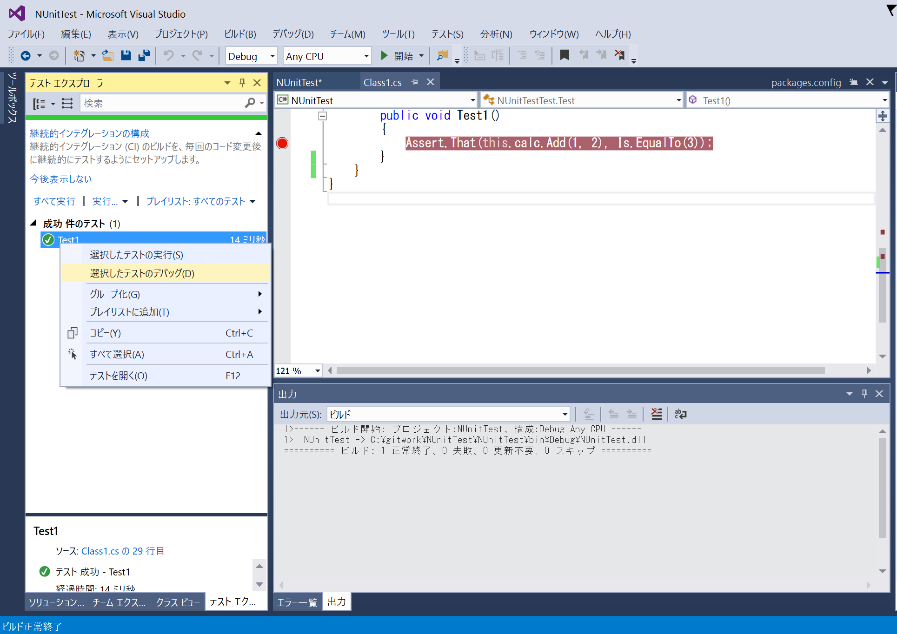

$Date: 2018-07-07 06:49:13 +0900 (2018/07/07 (土)) $
$Revision: 1347 $
NUnit3 の単体テストのデバッグ
前提条件
NUnit3 の使い方 の通りにプロジェクトをセットアップして、
NUnit3.TestAdaptor を設定していること。
デバッグ方法
- Visual Studio でブレークしたいところにブレークポイントを設定する
- テストエクスプローラでデバッグしたいテストを右クリックして選択したテストのデバッグを選ぶ
